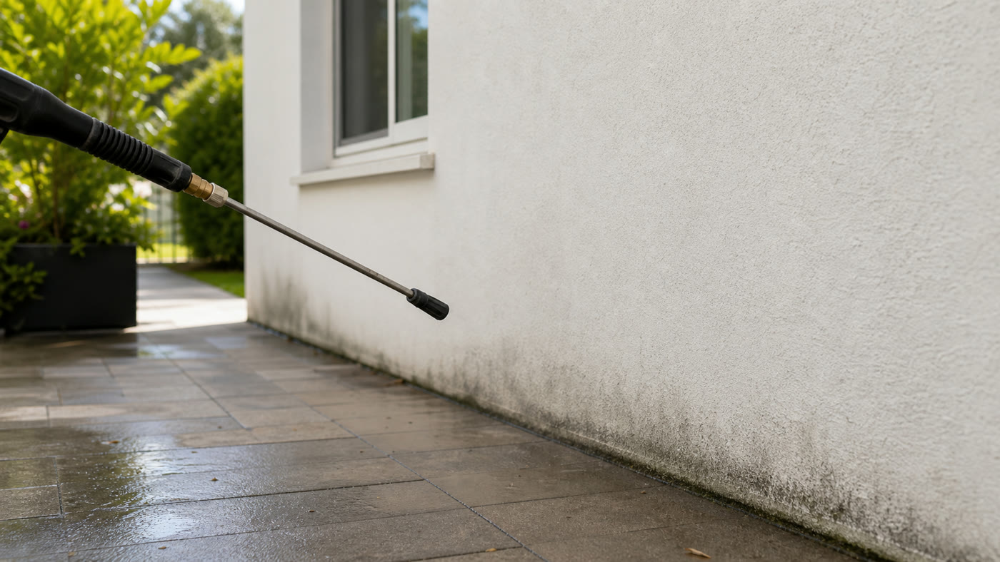

Resumen rápido: el error más común es pensar que más presión limpia mejor. Distancia, boquilla, ángulo y tipo de superficie importan tanto o más que la potencia. Y la altura mata.

1. Acercar demasiado la boquilla
Cuando la boquilla queda muy cerca, el chorro marca pintura, revoque, madera o juntas. Es mejor empezar a 50 cm de distancia y acercarte de a poco si hace falta. Si empezás cerca y queda marca, ya no se borra fácil.
2. Usar la misma presión para todo
Un piso de hormigón no se comporta igual que una pared pintada, una teja o una madera. Cada material pide otra forma de trabajo. Por eso conviene saber qué método va en cada caso, y para eso tenemos la guía de lavado a presión o soft wash.
3. Apuntar directo a ventanas o burletes
El agua a presión fuerza filtraciones en ventanas, puertas, burletes y encuentros sensibles. La gente arruina vidrios térmicos, hace entrar agua adentro de la casa y descubre el problema una semana después con olor a humedad. Cambiá el ángulo y no insistas en esos puntos.
4. No preparar el área antes de arrancar
Muebles, macetas, cables, enchufes a la intemperie, plantas delicadas y objetos sueltos hay que revisarlos antes. Preparar el lugar te evita interrupciones, daños y tener que parar a mitad de trabajo para tapar cosas. Lleva 10 minutos y se ahorra dos horas de bardo.
5. Subestimar altura y seguridad
Trabajar en altura con agua, manguera y superficie mojada multiplica el riesgo. Cada año hay accidentes graves por gente que se subió a un techo a "darle una pasada rápida". Si hay techos, paredes altas o accesos difíciles, mirá la guía de techos de tejas con hidrolavadora antes de subir.
6. No mirar hacia dónde va el agua
El agua arrastra tierra, hojas y suciedad. Si no pensás el recorrido, termina entrando a una galería, mojando muebles que estaban del otro lado de una pared o acumulándose en un desagüe tapado que vas a tener que destapar después. Antes de empezar mirá pendientes, rejillas y zonas sensibles.
7. Limpiar sin probar una zona chica primero
Cuando la superficie es pintada, porosa o vieja, probá en una zona poco visible primero. Si la pintura se levanta, queda marca o la junta se desgrana, cambiá el método. Este paso simple evita arruinar fachadas y patios enteros por no perder 5 minutos haciendo una prueba.
Cuándo llamar a alguien con experiencia
Si el trabajo es fachada alta, techo, tejas, ventanas grandes, pileta o patio con verdín fuerte, pedir cotización profesional sale mucho más barato que reparar un daño después. Un servicio bien hecho no es solo limpiar, también es saber cuándo bajar presión, cambiar distancia o directamente no tocar una zona. Antes de pedir presupuesto, te conviene leer qué fotos mandar para cotizar así te respondemos rápido y con un rango preciso.
Si querés evitarte el dolor de cabeza
Mandanos fotos de la superficie por WhatsApp. Te decimos si conviene hacerlo vos con cuidado o si vale más la pena que lo hagamos nosotros. Sin obligación de avanzar. Consultar por WhatsApp.